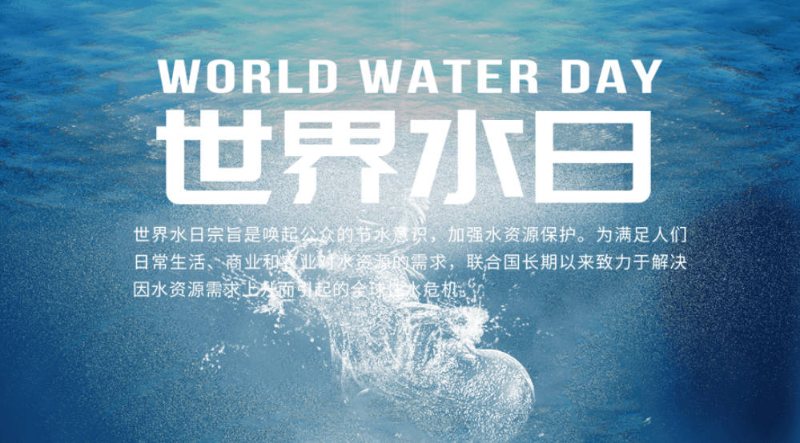
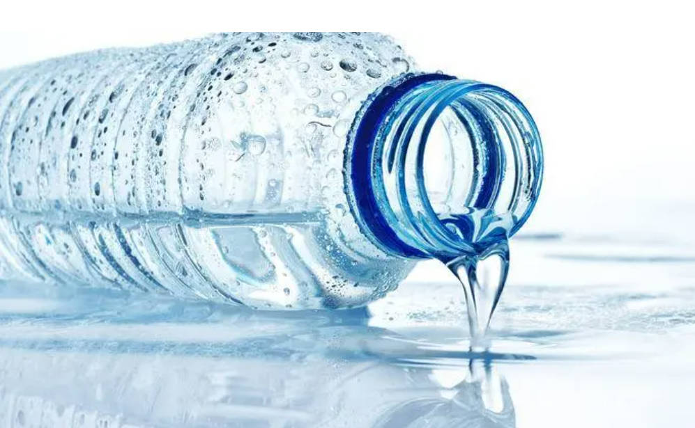
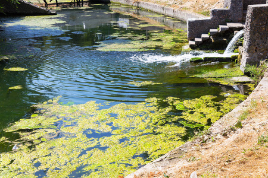

-

自1993年起，将每年的3月22日定为世界水日，旨在推动 对水资源进行综合性统筹规划和管理，加强水资源保护， 以解决日益严峻的缺水问题。同时，通过开展广泛的宣传 教育活动，增强公众对开发和保护水资源的意识。
-

水是生命之源，是人类生存和发展的重要基础。然而， 由于人类活动的不当和环境污染，全球的水资源正面临着严重的 危机。因此，保护水资源的重要性不言而喻。为了保护水资源， 我们每个人都应该从自身做起。减少用水量，合理利用水资源， 避免污染水体，
-

水源污染的原因是多种多样的。工业废水、农业化肥和农药、 生活污水以及塑料垃圾等都是导致水源污染的主要因素。 工业废水中的有害化学物质和重金属会渗入地下水和河流， 对水生生物和人类健康造成威胁。农业活动中使用的化肥和农药 会通过农田排放到水源中，导致水体富营养化和生态系统的破坏。 另外，生活污水中的有害物质和微塑料也会污染水源。 全球范围内有数百万人因为缺乏清洁饮用水而生病甚至死亡。
-

水源污染是对地球生命的威胁，但我们有责任保护和修复 受损的水源。只有通过全球合作、个人行动和政府的支持， 我们才能确保清洁、可持续的水源供应。让我们共同努力， 保护水源，为我们自己和未来的世代创造一个更美好、 更可持续的生活环境，让美丽的自然景色永远存在。让我们以实际行动， 为下一代留下一个更美好的世界。因为只有当我们保护好水源， 地球才能永远美丽。